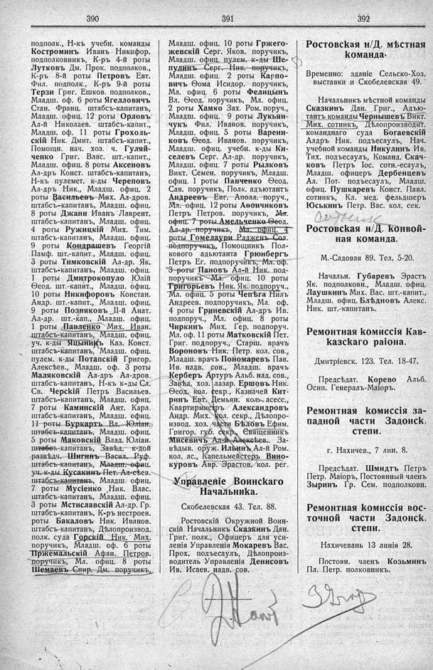

Лист источника 262
Скан

Распознанный текст
390
подполк., Н-къ учебн. команды
Костроминъ Иванъ Никифор.
подполковникъ, К-ръ 4-й роты
Лутковъ Дм. Прок. подполков.,
К-ръ 8-й роты Петровъ Евт.
Фил. подполк., К-ръ 9-й роты
Терзи Григ. Ешков. подполков.,
Младш. оф. 6 роты Ягелловичъ
Стан. Франц. штабсъ-капитанъ,
Младш. офиц. 12 роты Орловъ
Ал-й Николаев. штабсъ-капит.,
Младш. оф. 11 роты Грохоль-
скій Ник. Дмит. штабсъ-капит.,
Помощн. нач. хоз. ч. Гуляй-
ченко Григ. Влас. шт.-капит.,
Младш. офиц. 8 роты Аксеновъ
Ал-дръ Конст. штабсъ-капитанъ,
Н-къ пулемет. к-ды Череповъ
Ал-дръ Ник., Младш. офиц. 2
роты Васильевъ Мих. Ал-дров.
штабсъ-капитанъ, Младш. офиц.
8 роты Джани Иванъ Лаврент.
штабсъ-капитанъ, Младш. офиц.
4 роты Ружицкій Мих. Тим.
штабсъ-капитанъ, Младш. офиц.
9 роты Кондрашевъ Георгій
Памф. шт.-капит., Младш. офиц.
3 роты Тимковскій Ал-др. Як.
штабсъ-капитанъ, Младш. офиц.
1 роты Дмитрокопуло Юлій
Ѳеод. шт.-капит., Младш. офиц.
10 роты Никифоровъ Констан.
Андр. шт.-капит., Младш. офиц.
9 роты Позняковъ II-й Анат.
Ал-др. шт.-кап., Младш. офиц.
1 роты Павленко Мих. Иван.
штабсъ-капитанъ, Младш. офиц.
уч. к-ды Яцынинъ Каз. Конст.
штабсъ-капитанъ, Младш. офиц.
пулем. к-ды Потапскій Григор.
Алексѣев., Младш. оф. 3 роты
Маляковскій Ал-дръ Ал-дров.
штабсъ-капитанъ, Н-къ к-ды Сл.
Св. Черскій Петръ Васильев.
штабсъ-капитанъ, Младш. офиц.
7 роты Каминскій Ант. Карл.
штабсъ-капитанъ, Младш. офиц.
11 роты Буркартъ Вл. Юліан.
штабсъ-капитанъ, Младш. офиц.
5 роты Маковскій Влад. Юліан.
штабсъ-капитанъ, Завѣд. к-дой
развѣдч. Шигинъ Васил. Руф.
штабсъ-капитанъ, Младш. офиц.
уч. к-ды Кусакинъ Пет. Ал-сѣев.
штабсъ-капитанъ, Младш. офиц.
7 роты Мусіенко Ник. Влас.
штабсъ-капитанъ, Младш. офиц.
3 роты Мстиславскій Ал-др. Гр.
штабсъ-капитанъ, К-ръ нестроев.
роты Бакаловъ Ник. Иванов.
штабсъ-капитанъ, Дѣлопроизвод.
полк. суда Горскій Ник. Мих.
поручикъ, Младш. оф. 6 роты
Пржемальскій Афан. Петров.
поручикъ, Мл. офиц. 8 роты
Шемаевъ Спир. Дм. поручикъ,
391
Младш. офиц. 10 роты Гржего-
жевскій Серг. Яков. поручикъ,
Младш. офиц. пулем. к-ды Ше-
пулинъ Серг. Ник. поручикъ,
Младш. офиц. 2 роты Карпо-
вичъ Ѳома Исидор. поручикъ,
Мл. офиц. 6 роты Фелицынъ
Вл. Ѳеод. поручикъ, Мл. офиц.
2 роты Хамко Зах. Ром. поруч.,
Младш. офиц. 9 роты Лукьян-
чукъ Фил. Иванов. поручикъ,
Младш. офиц. 5 роты Варени-
ковъ Ѳеод. Иванов. поручикъ,
Младш. офиц. учебн. к-ды Ки-
селевъ Серг. Ал-др. поручикъ,
Младш. офиц. 7 роты Рыльковъ
Викт. Семен. поручикъ, Младш.
офиц. 1 роты Панченко Ѳеод.
Сав. поручикъ, Полк. адъютантъ
Андреевъ Евг. Аполл. поруч.,
Мл. офиц. 12 роты Аѳончиковъ
Петръ Петров. поручикъ, Мл.
офиц. 7 роты Амельченко Ѳеод.
Ал-др. поручикъ, Мл. офиц. 4
роты Гомелаури Радженъ Сол.
подпоручикъ, Помощникъ Пол-
кового адъютанта Грюнбергъ
Петръ Ег. подпоручикъ, Мл. оф.
3 роты Пановъ Ал-й Ник. под-
поручикъ Мл. офиц. 10 роты
Григорьевъ Ник. Як. подпоруч.,
Мл. офиц. 5 роты Чепѣга Нилъ
Андреев. подпоручикъ, Мл. оф.
4 роты Гриневскій Ал-дръ Ив.
подпоруч., Мл. офиц. 8 роты
Чиркинъ Мих. Гер. подпоруч.
Мл. оф. 11 роты Матковскій Пет.
Григ. подпоруч., Старш. врачъ
Вороновъ Ник. Петр. кол. сов.,
Младш. врачъ Пономаревъ Пав.
Ив. надв. сов., Младш. врачъ
Керберъ Артуръ Альб. над. сов.,
Завѣд. хоз. лазар. Ершовъ Ник.
Ѳеод. кол. секр., Казначей Кит-
ринъ Евт. Демьян. кол. асесс.,
Квартирмистръ Александровъ
Андр. Мих. кол. секр., Дѣлопро-
извод. хоз. части Бѣловъ Ефим.
Григор. губ. секр., Священникъ
Мисевичъ Ал-й Алексѣев.. За-
вѣдыв. оруж. Ильинъ Ал-й Ром.
кол. ас., Капельмейстеръ Вино-
куровъ Авр. Эрастов. кол. рег.
Управленіе Воинскаго
Начальника.
Скобелевская 43. Тел. 88.
Ростовскій Окружной Воин-
скій Начальникъ Сказкинъ Дан.
Григ. полк., Офицеръ для уси-
ленія Управленія Мокаревъ Вас.
Прох. подъесаулъ, Дѣлопроиз-
водитель Управленія Денисовъ
Ив. Исаев. надв. сов.
392
Ростовская н/Д. мѣстная
команда.
Временно: зданіе Сельско-Хоз.
выставки и Скобелевская 49.
Начальникъ мѣстной команды
Сказкинъ Дан. Григ., Адъю-
тантъ команды Чернышевъ Викт.
Мих. сотникъ, Дѣлопроизводит.
команднаго суда Богаевскій
Алдръ Ник. подъесаулъ, Нач.
учебной команды Никулинъ Ив.
Тих. подъесаулъ, Команд. Скач-
ковъ Петръ Іос. сотн.-есаулъ,
Младш. офицеръ Дербенцевъ
Ал. Пот. подъесаулъ, Младш.
офиц. Пушкаревъ Конст. Павл.
сотникъ, Кл. мед. фельдшеръ
Юськинъ Петр. Вас. кол. сек.
Ростовская н/Д. конвой-
ная команда.
М.-Садовая 89. Тел. 5-20.
Начальн. Губаревъ Эраст Ивановъ
Як. подполковн., Младш. офиц.
Лаушкинъ Мих. Вас. шт.-капит.,
Младш. офиц. Блѣдновъ Алекс.
Ник. шт.-капитанъ.
Ремонтная комиссія Кав-
казскаго района.
Дмитріевск. 123. Тел. 18-47.
Предсѣдат. Корево Альб.
Осип. Генералъ-Маіоръ.
Ремонтная комиссія за-
падной части Задонск.
степи.
г. Нахичев., 7 лин. 8.
Предсѣдат. Шмидтъ Петръ
Петр. Маіоръ, Постоянный членъ
Зыринъ Гр. Сем. подполковн.
Ремонтная комиссія вос-
точной части Задонск.
степи.
Нахичевань 13 линія 28.
Постоян. членъ Козьминъ
Пл. Петр. полковникъ.